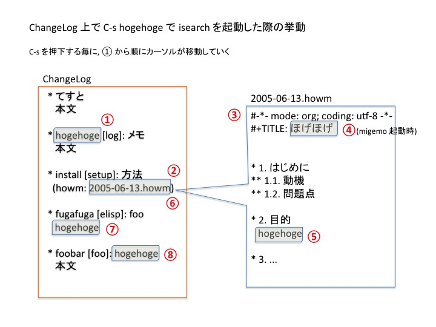

isearch の改良
elisp emacsTable of Contents
#+File Created:
#+Last Updated:
emacs でメモを検索する isearch (Ctrl-s/Ctrl-r) にちょっと機能をついかしてみた.
elisp の書き方はよくわかってないけど, 不安定ながらも動くものができたのでその記録を書いておく.
1 はじめに
私はここ何年か, ChangeLog メモという形式でメモを残している.
最初に書いた日付を見てみたら 2003 年 10 月であった. なんと, 気づかないうちに 10 年以上も続いてることになるのか…
ChangeLog 上でのメモは, 短いメモを書くぶんには問題ないのだが, 少し長めのまとめ文書とかを書こうとするといまいちであった.
長い文書では, 階層的な構造とか, 図とかを適宜文書の中に入れていきたいことがあるからである.
この問題を解決するために, 私は https://at-aka.blogspot.jp/2005/06/changelog-howm-quasi-howm.html で示されている quasi-howm という方法を使っている.
これを使うと, ChangeLog メモの中に, howm ファイルへのリンクを自動で作ってくれるのだ.
これを使って, 私は ChangeLog では書きにくい長いまとめ文書などをこの howm ファイルの中に書いている.
ChangeLog 上に howm へのリンクが張られるので, とりあえずポケット一つの原則は守られている(はず)ので安心だ.
ちなみに私は org-mode の形式で howm メモを書いている.
howm の機能はほぼ使っていないので, 今から考えると, 一定の場所へのリンクを自動で作ってくれれば何でもよかった感じだが, 今までずっと使ってきて慣れてるのでこの形式で書き続けている.
2 問題点
私は ChangeLog メモを検索する際に, インクリメンタルサーチ (isearch. Ctrl-s/Ctrl-r) での検索をよく使う.
私は基本残しておきたいことは全て ChangeLog メモに書くので, キーワードを覚えてれば ChangeLog ファイル上で Ctrl-s を使ってメモの該当ぶぶんを探し出し, その部分メモを見て思い出したりそこに書いてある URL に行ったりする.
しかし最近, ChangeLog メモのどっかに書いてた筈なのにインクリメンタルサーチで探し出せないことが頻発してきた.
キーワードも覚えられない程記憶力が死んできたのかとも考えましたがそーでもなさそうだ.
よくよく調べてみると, ChangeLog メモには直接書いてないけど, howm(org-mode)の文書中にキーワードが書いてあった場合があって, その場合は当然のことながら ChangeLog ファイルのインクリメンタルサーチでは検索出来ないことがわかった.
メモとして ChangeLog に書いてたつもりだったけど, 実際は howm(org-mode)のメモに書いていた. そのときのキーワードが ChangeLog ファイル内にあるかと思って探したけどなかった. 理由は探す所を間違ってたから. ほんとは howm(org-mode)のファイルの中を探さないといけない.
そんな感じである.
この状況も記憶力的にあんまり良くないような気もするのだが…
というわけで, インクリメンタルサーチで以下のようなことが出来ればいいんだけどなぁ…
ChangeLog ファイルをインクリメンタルサーチしたときに,
- ChangeLog 内に howm ファイルへのリンクが書いてあれば途中でそのファイルに立ち寄ってインクリメンタルサーチをする.
- howm ファイルを探し終わったら ChangeLog ファイルに戻ってきて ChangeLog のその場所からのインクリメンタルサーチを再開.
- 1. に戻る.
図で描くと, 以下のような感じになります.

3 elisp プログラムの作成
この問題を解決するために, まずは同じようなことでめんどくさがってる人がいないかどうかを探した.
誰かやってる人いないかと思って色々検索してみたが, うまく見つけられなかった.
こういうことやりたい人いないのかなぁ. 普通は何かもっと効率の良い方法でやるんだろうか？
やってる人がいなさそうだったので, elisp プログラミングの勉強も兼ねて自分で作ってみることにした.
3.1 作成ほうしん
Ctrl-s を二回以上押下すると isearch-repeat という命令が動くっぽい.
これの直前で(次の検索ワードへ移動する前に) howm ファイルがあるかどうかを探し, あればその buffer へ移動して検索を続けるようにする.
(defadvice isearch-repeat (before hogehoge activate) ;; 1. 次の検索ワードを探して位置を調べておく. ;; 2. 次の howm ファイルのありかを探して位置を調べておく. ;; 3. 次の howm のありか > 次の hogehoge のありか であれば howm ファイルの中へ入りその中を検索. )
3.2 パラメータ
ChangeLog メモファイル以外でも一応出来るように, パラメータを設定出来るようにする.
主なパラメータは以下の 4 つ(1 つは toggle によって制御することにした).
- 母艦ファイル名(このファイルを Ctrl-s で検索すると, 書いてあるファイル名が存在すればそのファイルを訪れて検索を続ける)
テキストファイルであれば何でもいい.
;; ChangeLog ファイルを検索する際は, そこに書いてあるファイルの中も検索する (setq idive-mother-fpath "/home/hoge/Memo/ChangeLog")
- 母艦ファイルに書いてあるファイル名のぱたーん
どのような文字列パターンを読み取って訪れるファイル名を抽出するか?
;; ".howm" という文字列を持つファイル名を抽出したい場合 (setq idive-fname-patterns '(".howm"))
上で得られたファイル名(fname)から実在のファイル名への変換関数
;; fname をそのまま実在するファイル名とする場合 (defun idive--expand-file-name(fname) (setq fname (expand-file-name fname)) (if (file-exists-p fname) fname nil) ;; 存在しなければ nil を返す )
- ファイル検索の方法
ChangeLog の中に, 何度か同じファイル名が書いてある場合.
ファイル名があればそのファイルの中に入って検索したいとき
(setq idive-visit-dived-file-p t)一度検索したファイルは検索しないとき.
(setq idive-visit-dived-file-p nil) - そもそもこの方式で isearch の機能拡張を使うかどーか.
普通に検索したいときもあると思うので toggle 出来るようにしたい.
(defvar idive-toggle t) (defun idive--toggle() (interactive) (if idive-toggle (setq idive-toggle nil) (setq idive-toggle t) ) (message "idive-toggle=%s" idive-toggle) )
こんな風に global 変数を気軽に使っていいんだろーかとも思うが, いい方法がわかんないのでとりあえずこれで.
上記 1. のパラメータを変更すれば特別な isearch をするファイル(母艦ファイル)名を変更できる.
私の場合はここは ChangeLog ファイルを指定している.
上記 2. のパラメータを変更すれば検索するファイル名の文字列パターンを変更できます.
idive–expand-file-name(fname) は文字列 fname から実際のファイル名への変換を行う関数です.
例:
fname から決まった dir を追加してファイル名が完成する場合,
fhame = '2017-09-04-111111.howm' => '/home/saito1369/howm/2017/09/2017-09-04-111111.howm'
の対応を return する関数を書くことになる.
3.3 isearch-mode-hook
iserach 開始の際にやることを hook で指定.
新しい関数をつくって add-hook とやればいいらしい.
(add-hook'isearch-mode-hook 'idive--init) ;; 開いている buffer が母艦であればその後色々やる. ;; 母艦ファイル(ChangeLog)じゃなければふつーにやる. (defun idive--init() (let ((cbuf (current-buffer))) (when (idive--mother-buffer-p) ;; is-dive-mother-fname (母艦)の buffer を持っておく (setq idive-mother-buffer cbuf) ;; 既に開いている buffer の list を hash でとる. (idive--get-hash-already-exist-buffers) ;; 訪問した buffer を記録する場所を初期化 (setq idive-dived-files-hash (make-hash-table :test 'equal)) ) ) ) ;; 今開いてるのが mother-buffer かどうかを確認する (defun idive--mother-buffer-p() (let ((fpath nil)) (if buffer-file-name (setq fpath (expand-file-name buffer-file-name))) (if (and fpath idive-mother-fpath (string= fpath idive-mother-fpath)) t nil) ) )
既に開いている buffer のリストを hash でとるのは,
検索中に訪問するファイルが既に開いているのであればその buffer を開く, 開いてなければ検索終了後に buffer を削除するため.
訪問した buffer を記録するのは, 一度訪問した buffer は訪問しないようにするため.
(パラメータの項でも書いたが, 以下のように設定すれば何度も同じ buffer を訪問しないようにできる. この動作が default)
(setq idive-visit-dived-file-p nil)
3.4 isearch-mode-end-hook
isearch 終了の際にやること.
使っていた global な一時変数を全部解放する.
;; isearch 終了 (add-hook 'isearch-mode-end-hook 'idive--reset) ;; 以下のパラメータをリセットする. (defun idive--reset() ;; 母艦ファイル(ex. ChangeLog)の buffer (setq idive-mother-buffer nil) ;; 既に訪問した buffers のリスト(hash) (setq idive-dived-files-hash nil) ;; 検索を行う前から元々開いてた buffers (setq idive-already-exist-hash nil) ;; 訪問するファイルの名前(一番重要な一時変数) (setq idive-fname nil) ;; 元の検索語(isearch-string) が母艦ファイル上で次どこにあるかの場所 (setq idive-next-point nil) ;; isearch-repeat 直前にいた母艦ファイル上の場所 (setq idive-present-point nil) ;; isearch-string(検索語)の退避場所 (setq idive-isearch-string nil) ;; 今から訪問する file 名が書いてある母艦ファイル上の場所 (setq idive-fname-point nil) )
3.5 defadvice
プログラムの本体部分.
isearch-repeat を行うタイミングで, howm ファイルを探す.
条件に合う howm ファイルがあればそのファイルを訪れ検索する.
(defadvice isearch-repeat (around is-dive-isearch-repeat activate) "Dive another buffer." (if (idive--mother-buffer-p) ;; 今母艦ファイル内を検索している場合 (if idive-fname (idive--dive-another-buffer) ;; idive-fname があればそのファイルに移動 (isearch は実行しない) (idive--search-idive-fname) ;; idive-fname が無ければ探して ad-do-it ;; isearch を実行 ) ;; 検索しているファイルが母艦ファイルでない場合 ;; idive-fname を訪問していて 検索が終わった場合は母艦ファイルに戻る (if (and (idive--another-buffer-p) (not isearch-success)) (idive--return-mother)) ;; isearch を実行 ad-do-it ) )
idive-toggle 変数を後で追加したので結局は以下のようになる.
条件を色々考えるのが面倒なので上から被せている.
(defadvice isearch-repeat (around isearch-repeat-idive-ad activate) "Dive another buffer." (when idive-toggle (if (idive--mother-buffer-p) ;; mother file の検索の場合 (if idive-fname (idive--dive-another-buffer) ;; idive-fname があればそのファイルに移動 (isearch 実行しない) (idive--search-idive-fname) ;; idive-fname が無ければ探して ad-do-it ;; isearch を実行 ) ;; mother file でない場合 ;; idive-fname を訪問していて 検索が終わった場合は mother に戻る (if (and (idive--another-buffer-p) (not isearch-success)) (idive--return-mother) ;; そうでなければ isearch を実行(普通はここが動く) ad-do-it ) ) ) ;; やらないとき (unless idive-toggle ad-do-it) )
idive-fname は ChangeLog ファイル(母艦ファイル)上にある howm ファイル名を示す.
ここに値が入ってなければ, あるかどうかを探す.
(defun idive--search-idive-fname() ;; 今の母艦上の場所を保存する. (setq idive-present-point (point)) ;; 検索文字列を元々のものに戻しておく(isearch-string) (idive--return-isearch-string) ;; 検索して次の場所を保存しておく (setq idive-next-point (idive--get-next-point isearch-string nil)) ;; 母艦上の場所を一旦元に戻す (idive--goto-char) ;; 現在の場所(idive-present-point) - idive-next-point 内に idive-fname(howm ファイル)があるかどうかを調べる (idive--get-dive-file) ;; もし idive-fname があれば, 一時的に検索文字列を idive-fname に変更する. (when idive-fname (idive--change-isearch-string) ;; カーソル位置の調整 (goto-char (if isearch-forward (- idive-fname-point (length isearch-string)) (+ idive-fname-point (length isearch-string)))) ) )
(defun idive--get-next-point(str end) (let ((pnt nil)) (if migemo-isearch-enable-p (setq pnt (migemo-forward str end t (idive--isdir))) (setq (search-forward str end t (idive--isdir))) ) png ) )
idive-fname があればそのファイルを訪問する.
(defun idive--dive-another-buffer() ;; 母艦ファイル(ex. ChangeLog ファイル)内を移動する (idive--get-next-point idive-fname idive-next-point) ;; ;; dive into the file (idive-fname) ;; ;; ファイルを開く (find-file (idive--expand-file-name idive-fname)) ; 検索文字列を元に戻す (idive--return-isearch-string) ; isearch-forward の値に応じてファイルの先頭あるいは最後に移動する (goto-char (if isearch-forward (point-min) (point-max))) ;; 一つも見つからないエラーが出るので (setq isearch-case-fold-search t) )
idive-fname を訪問し終わったら母艦ファイルに戻る
(defun idive--return-mother() ;; 今開いてる buffer を閉じる(もし元から開いてなければ) (idive--kill-buffer-not-already-exist) ; 検索文字列 isearch-string を idive-fname にして (idive--change-isearch-string) ; idive-fname は未定義にしておく. ; これでこのファイルに関しての探索を終了させる. (setq idive-fname nil) ;; 母艦ファイルに戻る (switch-to-buffer idive-mother-buffer) ; 念のため (goto-char idive-fname-point) (setq idive-fname-point nil) )
3.6 idive–get-dive-file
現在の場所から次にキーワードが見つかった場所の間に idive-fname (howm ファイル名) があるかどうかを調べる.
一番めんどくさい部分.
(defun idive--get-dive-file() (let ((suffs idive-fname-patterns) (sff nil) (dpoint nil) (fname nil) (fpath nil) (dive-points (list)) ;; 配列の定義 (fhash (make-hash-table :test 'equal)) (dhash (make-hash-table :test 'equal)) (dp nil) (fnames (list)) (rep nil) ) ;; 初期化 (setq idive-fname nil) (save-excursion (while suffs (setq sff (car suffs)) (setq rep t) (while rep (setq dpoint (idive--get-next-point sff idive-next-point)) (setq fpath nil) (setq fname nil) (when dpoint ;; 見つかったら ;; file 名の取り出し (setq fname (thing-at-point 'filename)) ;; fpath (ファイルが存在しなければ nil が返る) (setq fpath (idive--expand-file-name fname)) ;; file が存在して, まだ開いていないとき (when (and fpath (not (gethash fpath idive-dived-files-hash))) ;; dpoint を push する (push dpoint dive-points) ;; dpoint => fname (puthash dpoint fname fhash) ;; fhash[dpoint] =fname (unless (gethash fname dhash) ;; 最初に出てきた fname の場所を記録しておく (puthash fname dpoint dhash)) ;; dhash[fname] =dpoint ) ) (unless dpoint (setq rep nil)) ;; 簡易版: ファイルの探索を最も idive--isdir 方向で最も近い一回で終わらせる ;; (==> その代わり idive--filtered をかけない) ;; 以下をコメントアウトすれば idive-present-point から idive-next-point ;; までにある全てのファイルの検索を行う => 範囲が広ければ結構時間がかかることもある. ;(setq rep nil) ) (idive--goto-char) (setq suffs (cdr suffs)) ) ) (if (= (idive--isdir) 1) (setq dive-points (sort dive-points '<))) (if (= (idive--isdir) -1) (setq dive-points (sort dive-points '>))) ;; ファイル名のリストをつくる (while dive-points (setq dp (car dive-points)) (push (gethash dp fhash) fnames) (setq dive-points (cdr dive-points)) ) ;; filter をかける場合(検索文字列が無いファイルは開かない) (setq idive-fname (idive--filtered fnames)) ;; もし idive-fname があれば, fname の場所を確保しておく (if idive-fname (setq idive-fname-point (gethash idive-fname dhash))) ; filter をかけない場合は以下 ;(setq idive-fname (car fnames)) ;; ここで dive するファイルを登録する ;; (idive-visit-dived-file-p が t ならば登録しない) (unless idive-visit-dived-file-p (if idive-fname (puthash (idive--expand-file-name idive-fname) t idive-dived-files-hash))) ) )
3.7 プログラム全体
いちおう以下に置いておく.
https://github.com/saito1369/isearch-dive
4 反省点
自分で使ってる分には今のところ問題なさそうだが, エラーが出る度に勉強しながら継ぎ足しつぎたしで書いてきたので, もうなんか最初から書き直した方がいいような.
そんな気分.
限定された使い方ではうまく動いてるように見えるけど, 色々と危ういことをやってそうな雰囲気でいきなり動かなくなりそう.
isearch の仕組みがよくわかってないまま作ってるので, もう少しきちんと調べてからやればよかったかもしれない.
特に isearch-なんとか という変数の使い方とか.
isearch-string
isearch-success
isearch-forward
isearch-case-fold-search
5 参考文献
Unix のメモ技術
http://0xcc.net/unimag/1/
ChangeLog メモを試してみよう
https://at-aka.blogspot.jp/p/change-log.html
私の ChangeLog メモ活用法
http://ta2o.net/doc/zb/0016.html
ChangeLog メモで Howm を使う quasi-howm
https://at-aka.blogspot.jp/2005/06/changelog-howm-quasi-howm.html
Automatically wrapping I-search?
https://stackoverflow.com/questions/285660/automatically-wrapping-i-search
"1 of n" result for Emacs search - Stack Overflow
https://stackoverflow.com/questions/14764130/1-of-n-result-for-emacs-search
ace-isearch : isearch、ace-jump-mode、avy、helm-swoopを滑らかに統合 - Qiita
http://qiita.com/ballforest/items/7c3f2e64b59d8157bc8c
emacs: interactively search open buffers
https://stackoverflow.com/questions/2641211/emacs-interactively-search-open-buffers
ace-jump-modeの紹介 - syohex’s diary
http://syohex.hatenablog.com/entry/20120304/1330822993
画面内を素早くカーソル移動する方法のまとめ - Qiita
http://qiita.com/ballforest/items/834c92bf5bf262c37973
Emacs Lisp 関数のアドバイス
http://www.bookshelf.jp/texi/elisp-manual-20-2.5-jp/elisp_17.html
http://www.fan.gr.jp/~ring/doc/elisp_20/elisp_17.html
Emacs Lisp 基礎文法最速マスター
http://d.hatena.ne.jp/rubikitch/20100201/elispsyntax
Emacs Lisp でスクリプト処理
http://dev.ariel-networks.com/articles/software-design-200802/elisp-scripting/
正規表現の検索
http://www.math.s.chiba-u.ac.jp/~matsu/lisp/emacs-lisp-intro-jp_13.html
バッファファイル名
http://www.geocities.co.jp/SiliconValley-Bay/9285/ELISP-JA/elisp_406.html
リストと連想配列 - 環境設定のための Emacs Lisp 入門 | プログラマーズ雑記帳
http://yohshiy.blog.fc2.com/blog-entry-269.html
7.1. Creating Hash Tables
https://www.gnu.org/software/emacs/manual/html_node/elisp/Creating-Hash.html#Creating-Hash
re-search-forward
https://www.gnu.org/software/emacs/manual/html_node/eintr/re_002dsearch_002dforward.html
http://www.bookshelf.jp/texi/elisp-manual-20-2.5-jp/elisp_34.html
http://www.math.s.chiba-u.ac.jp/~matsu/lisp/emacs-lisp-intro-jp_13.html
http://www.geocities.co.jp/SiliconValley-Bay/9285/ELISP-JA/elisp_552.html
2.4. ファイル
http://www.bookshelf.jp/texi/elisp-manual-20-2.5-jp/elisp_25.html
http://www.geocities.co.jp/SiliconValley-Bay/9285/ELISP-JA/elisp_406.html
http://www.bookshelf.jp/texi/elisp-manual-20-2.5-jp/elisp_27.html
エラー(制御構造)
http://flex.phys.tohoku.ac.jp/texi/eljman/eljman_104.html